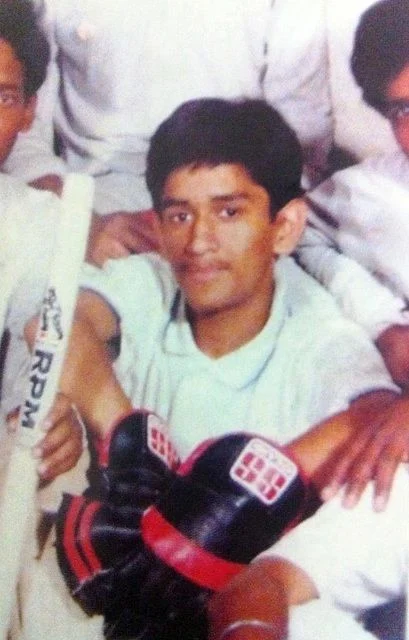

Contents
- Introduction
- Early life and background
- Early career
-
Career
- Domestic Career
- International Career
- Indian Premier League
- Playing style
- International records
- Awards and achievements
Introduction
.jpg)
Mahendra Singh Dhoni (/məˈheɪndrə ˈsɪŋ dhæˈnɪ/ (listen); born 7 July 1981) is an Indian professional cricketer. He was captain of the Indian national team in limited-overs formats from 2007 to 2017 and in Test cricket from 2008 to 2014. He is widely considered one of the greatest captains, wicket-keeper-batsman and finisher in the history of cricket. He plays as a right-handed wicket-keeper-batsman and is known for his calm captaincy and his ability to finish matches in tight situations. He is also the current captain of Chennai Super Kings in the Indian Premier League.
Early life and background

Dhoni was born in Ranchi, Bihar (now in Jharkhand) and hails from a Hindu Rajput family to parents from Uttarakhand. He is the youngest of three children of Pan Singh and Devaki Devi.His paternal village Lwali, is in Jainti Tehsil, Lamgara block of the Almora District of Uttarakhand.His parents moved from Uttarakhand to Ranchi, Jharkhand where his father worked as a pump operator in junior management position in MECON Colony situated in Doranda area in Ranchi. Unlike Dhoni, his uncle and cousins spell their surname "Dhauni"
Previously Dhoni was the goalkeeper for his DAV Jawahar Vidya Mandir school's football team, but after seeing his goalkeeping skills, coach Keshav Ranjan Banerjee, one who inspired Dhoni to be a cricketer, picked him to play cricket for his school team.His exceptional wicketkeeping skills allowed him to become the regular wicketkeeper at the Commando Cricket Club (1995–1998). Based on his performance at club cricket, he was picked for the 1997/98 season Vinoo Mankad Trophy Under-16 Championship, where he performed well.
Early career
n 1998, Dhoni was selected by Deval Sahay, a former Bihar Cricket Association Vice President and Ranchi District Cricket President, to play for the Central Coal Fields Limited (CCL) team. Till 1998 Dhoni, who was in 12th grade, had never played professional cricket. At CCL, he got an opportunity to bat higher up the order, where he performed exceptionally, which had helped CCL move to the A division.Deval Sahay, impressed by his performance, pushed for his selection in the Bihar team. Dhoni moved to the Ranchi team, the junior Bihar cricket team and eventually the senior Bihar Ranji Team within one year.
Dhoni made his Ranji Trophy debut for Bihar in the 1999–2000 season, as an eighteen-year-old. He made a half century in his debut match scoring 68* in the second innings against Assam cricket team.Dhoni finished the season with 283 runs in 5 matches. Dhoni scored his maiden first-class century while playing for Bihar against Bengal in the 2000/01 season.Apart from this century, his performance in the 2000/01 season did not include another score over fifty and in the 2001/02 season, he scored just five fifties in four Ranji matches.
He was recognised for his efforts in the 2003/04 season, especially in the One Day format and was picked for the India A squad for a tour of Zimbabwe and Kenya.Against the Zimbabwe XI in Harare Sports Club, Dhoni had his best wicket-keeping effort with 7 catches and 4 stumpings in the match. In the tri-nation tournament involving Kenya, India A and Pakistan A, Dhoni helped India A chase down their target of 223 against Pakistan A with a half-century. Continuing his good performance, he scored back to back centuries – 120[59] and 119*[60] – against the same team. Dhoni scored 362 runs in 6 innings at an average of 72.40 and his performance in the series received attention from the then Indian captain – Sourav Ganguly and Ravi Shastri, amongst others

Career
Domestic Career
He debuted in first class and List A Cricket in the season of 1999–2000. In domestic cricket circuit he played for the teams such as Bihar, Jharkhand, India A, Air India Blue, Indian Board President's XI, Rajasthan Cricket Association President's XI, East Zone, Rest of India, East zone under 19, Chennai Super Kings, Rising Pune Supergiant. In BCCI Corporate trophy he played for Indian government owned Air India airlines's Air India team until his resignation from the company in 2013.In 2009, BCCI Corporate trophy Dhoni scored 106 runs playing for Air India Blue team against 'India Revenue' team. In the inning he hit 7 sixes and 7 fours at Chandigarh.
International Career
Start of ODI career
The Indian ODI team in the early 2000s saw Rahul Dravid as the wicket-keeper to ensure that the wicket-keeper spot didn't lack in batting talent.[61] The team also saw the entry of wicket-keeper/batsmen from the junior ranks, with talents like Parthiv Patel and Dinesh Karthik (both India U-19 captains) named in the Test squads. With Dhoni making a mark in the India A squad, he was picked in the ODI squad for the Bangladesh tour in 2004/05. Dhoni did not have a great start to his ODI career, getting run out for a duck on debut.In spite of an average series against Bangladesh, Dhoni was picked for the Pakistan ODI series.
Rise through ranks
During the series between India and Australia in 2009, Dhoni scored 124 runs in 107 balls in the second ODI, and scored 71 runs in 95 balls in the third ODI. Along with Yuvraj Singh's 78 off of 96 balls, India won the third ODI by 6 wickets. Dhoni took his first and only wicket in international cricket on 30 September 2009. He bowled Travis Dowlin of the West Indies during a match in the 2009 ICC Champions Trophy.
Dhoni topped the ICC ODI Batsman rankings for several months in 2009. Michael Hussey from Australia replaced him at the top spot at the beginning of 2010
Dhoni had an excellent year in ODIs in 2009, scoring 1198 runs in just 24 innings, at considerably high average of 70.43. Dhoni was also the joint top-scorer in ODIs in 2009 along with Ricky Ponting, but the latter having played 30 innings. For his performances in 2009, he was named as captain and wicketkeeper of the World ODI XI by the ICC
Test career
Following his one-day performance against Sri Lanka, Dhoni replaced Dinesh Karthik in December 2005 as the Indian teams' Test wicket-keeper. Dhoni scored 30 runs in his debut match, that was marred by rain. Dhoni came to the crease when the team was at 109/5 and as wickets kept falling in quick succession, he played an aggressive innings in which he was the last man to be dismissed.[123] Dhoni made his maiden half-century in the second Test and his quick scoring rate (50 off 51 balls) helped India set a target of 436, where the Sri Lankans were then bowled out for 247
India toured Pakistan in January–February 2006 and Dhoni scored his maiden century in the second Test at Faisalabad. India was struggling, where Dhoni along with Irfan Pathan tried to recover, with the team still needing 107 runs to avoid a follow-on. Dhoni played in his naturally aggressive style as he brought up his maiden Test century in 93 balls, after scoring the first fifty in 34 deliveries.
Indian Premier League
Dhoni was contracted by the Chennai Super Kings (CSK) for US$1.5 million. This made him the most expensive player in the IPL for the first season auctions.[142] Under his captaincy, CSK won the 2010, 2011, 2018, 2021 and the 2023 Indian Premier League titles and the 2010 and 2014 Champions League T20 titles and ended up as a runner-up in 2008, 2012, 2013, 2015 and 2019 IPL league seasons
Playing style
Dhoni is a right-handed batsman and wicket-keeper. Dhoni is an unorthodox batsman. He deviates from conventional coaching manuals and showcases his unique batting technique. Dhoni displays a proclivity for hitting full-length deliveries towards the Long-on, Long-off, and Midwicket regions, rather than the conventional Cover region. Furthermore, he demonstrates remarkable skill in playing pull shots and hook shots off short-pitched deliveries, putting pressure on the bowler to adjust their line and length accordingly. Dhoni holds the bat with a firm grip at the bottom of the handle, striking the ball with force and precision to clear the boundary. Despite this, he still retains the capability to produce awe-inspiring, long sixes
International records
Dhoni is the first Indian wicket-keeper to score 4,000 Test runs.
After hitting a six in the third Test against England in Southampton, Dhoni completed 50 sixes as a captain, an Indian record.
Dhoni, with 294 dismissals in his career, ranks first in the all-time dismissals list by Indian wicket-keepers.
Awards and achievements

2018: Padma Bhushan, India's third-highest civilian award.
2009: Padma Shri, India's fourth-highest civilian award.
2007–08: Major Dhyanchand Khel Ratna award, India's highest honor given for achievement in sports